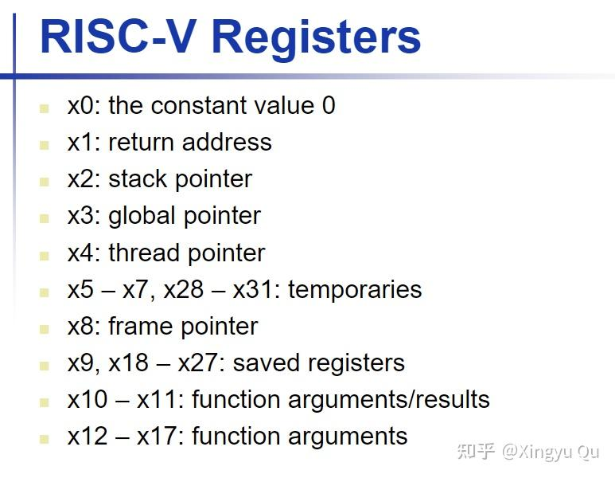
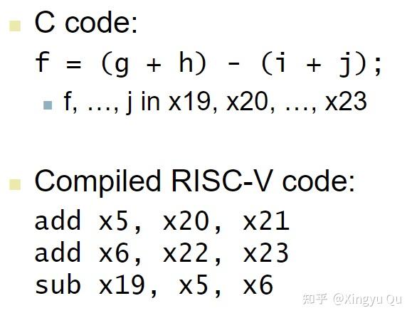
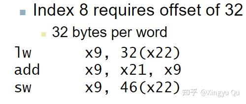
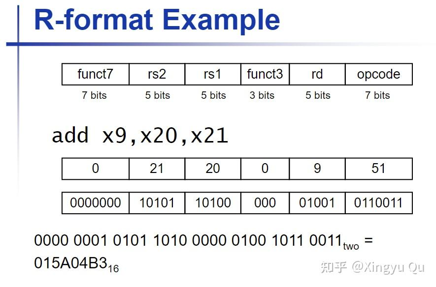
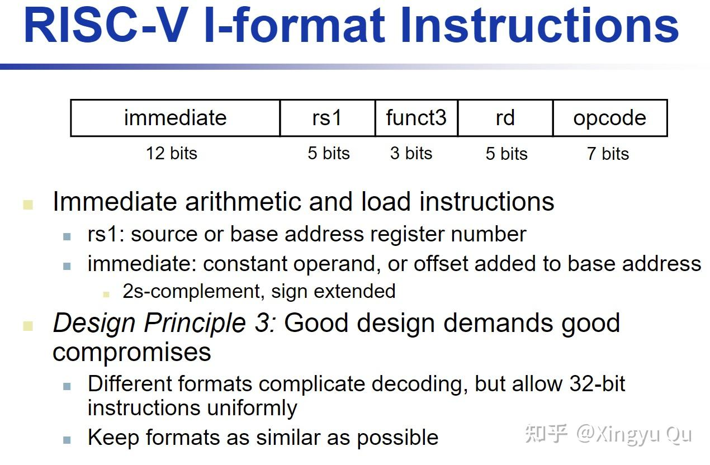
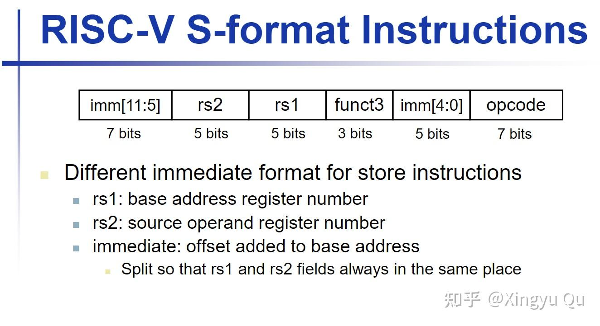

本讲概述 RISC-V 的主要特性与整体指令架构，具体编码细节将在下一讲展开。
（一）指令：计算机的语言
为实现计算机的基本功能，指令集至少需要支持以下几类操作：
（1）算术指令：完成基本算术与逻辑运算。
（2）数据传送指令
在经典存储程序体系结构中，计算与存储由不同部件承担，因此需要数据传送指令在寄存器与内存之间移动数据。
（3）跳转指令
程序需要控制，高级语言转换成的机器语言不一定是顺序执行的。
指令集架构（ISA）定义软件与硬件之间的接口；汇编表示使机器操作具有可读形式，体现了抽象在系统设计中的作用。
（二）RISC-V的操作数
课程中使用32位的RISC-V架构，包含32个寄存器。（x0~x31）
RISC-V 指令涉及寄存器、内存数据和立即数三类操作对象，下面分别介绍。
1. 寄存器——更小则更快
寄存器内置于CPU中，极短的通信距离和极小的硬件结构加快了数据的传送速度。


2. 内存
RISC-V 采用 load/store 架构：算术运算主要在寄存器中完成，数据通过 load 与 store 指令在寄存器和内存之间移动。
（1）通过存、取指令实现数据的存储和提取

（2）字节寻址（byte-addressed）
RISC-V 将整个内存空间划分为最小单元为 “8 位（1 字节）” 的存储单元，每个这样的单元都被分配一个唯一的整数地址（如 0x00000000、0x00000001、0x00000002 等）。这里的 “address”（地址）就是用来唯一标识这些 8 位字节单元的编号，每个地址精确对应一块 8 位的存储空间。
（3）小端法
一个多字节 “字”（word，如 32 位或 64 位数据）中，最低有效字节存储在该字的最低地址处。
（4）非对齐
RISC-V 的基本指令说明了自然对齐访问；非对齐 load/store 是否由硬件透明支持取决于执行环境，也可能触发异常并由软件处理。
3.立即数
立即数只能作为源操作数；
立即数直接编码在指令中，可减少额外的数据读取；
立即数有大小限制，这一点在后面的指令格式中可以看见。
（三）RISC-V的指令分类
简单源于规整：RV32I 基础指令采用固定的 32 位编码。
- R型指令
三操作数算术指令

rs1, rs2分别为两个源操作数；rd为目的操作数（都为寄存器）
opcode 为主操作码；funct3 与 funct7 用于进一步区分具体操作。
操作数的字段长度全部为5位，恰好能表示0~31号寄存器
优秀的设计需要适当的折中——为保持指令长度不变，设计人员将指令分类处理
2. I型指令
立即数算术指令与加载指令

immediate：按指令语义解释并扩展的立即数字段
rs1 表示源寄存器，rd 表示目的寄存器；opcode 与 funct3 共同确定具体操作。
3. S型指令
存储指令

S指令的12位立即数字段分为低5位和高7位，这种设计是因为保持所有指令格式的rs1和rs2处于同一字段。
rs1：保存基址的源寄存器；imm：地址偏移量
rs2：提供待写入数据的源寄存器
opcode/funct3：操作码
总结
本讲概述 RISC-V 指令与 CPU 的基本关系，并归纳三个经典设计原则：
1.更小则更快
2.简单源于规整
3.优秀的设计需要适当的折中
这些设计原则也适用于后续的体系结构与系统研究。